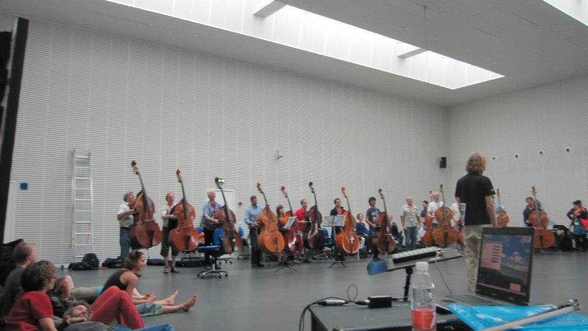

Slaget Om København, Københavns havn
17/08 - 2012.
Jeg var med til at arrangere kostumer til denne happening.
Se billeder her:
http://www.flickr.com/photos/liveartinstallations/7904773122/in/set-72157631346753496/
Der var 100 kontrabassister der spillede nede ved havnen mens store sejlskibe sejlede rundt
og der var tømmerflåder med dansere og ild og meget mere.

Læs om arrangementet her:
http://www.liveartinstallations.com/art/?p=2392